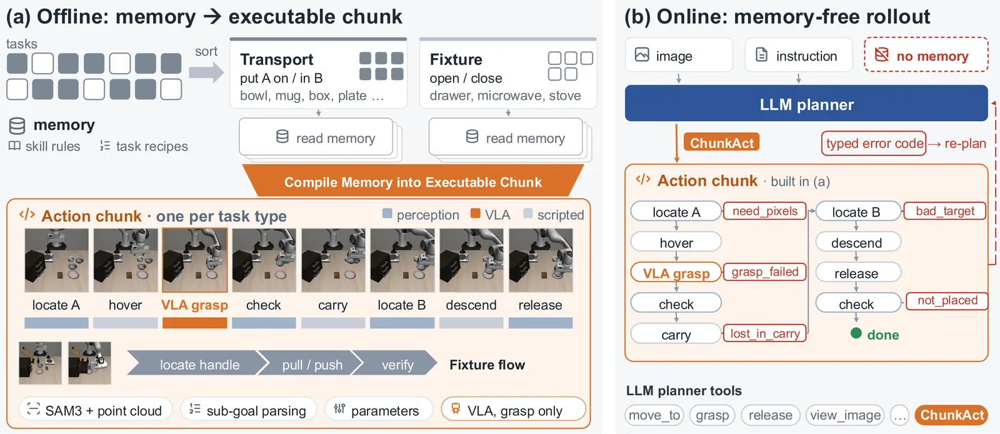
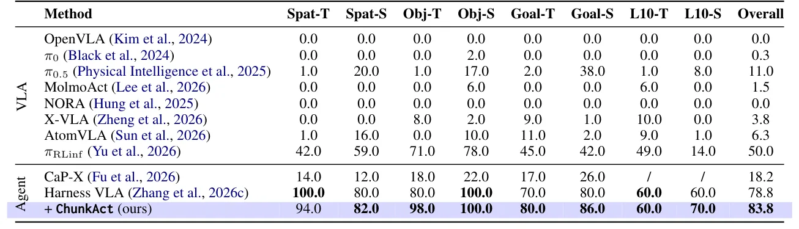
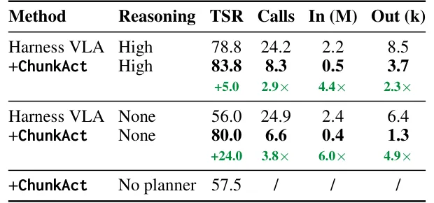

O custo oculto da generalização em robótica agêntica
A robótica agêntica emergiu como um paradigma promissor para manipulação robótica, colocando um modelo de linguagem grande (LLM) no loop de controle do robô. Diferente das políticas tradicionais que mapeiam pixels e comandos de linguagem diretamente para comandos motores, essa abordagem equipa o LLM com ferramentas de percepção, movimento e visão-linguagem-ação (VLA), além de uma memória de experiências anteriores. O resultado é uma capacidade notável de generalizar para novas tarefas sem necessidade de retreinamento específico.
No entanto, essa generalização vem a um preço alto em eficiência computacional e financeira. Em cada passo de interação, o agente observa a cena, consulta sua memória, raciocina e emite uma única chamada de ferramenta. Cada primitiva de movimento requer uma rodada dedicada de raciocínio do LLM sobre todo o histórico de interação. Isso significa que o custo de um episódio cresce linearmente com o número de primitivas necessárias para completar a tarefa.
A análise dos autores revela que esse raciocínio é frequentemente redundante. Uma vez que um sub-objetivo é escolhido e seus alvos localizados, as primitivas subsequentes seguem uma rotina já prescrita pela memória. O LLM tende a deliberar sobre cada passo e constantemente retorna à memória para orientação, mesmo quando a decisão já foi tomada implicitamente. Essa redundância não só aumenta o custo, mas também torna a recuperação de memória e o raciocínio menos confiáveis à medida que o contexto cresce.

ChunkAct: Compilando memória em chunks executáveis
Para resolver essa ineficiência, os autores apresentam o ChunkAct, que introduz o conceito de 'action chunking' (agrupamento de ações) à robótica agêntica. A ideia central é internalizar a memória do agente em sequências de ação generalizáveis que executam sem a participação passo a passo do planejador LLM. Em vez de chamar o LLM para cada pequeno movimento, o sistema compila offline a memória em chunks executáveis.
O processo opera em duas fases distintas. Offline, o ChunkAct compila a memória do agente em chunks de ação. Isso significa que as rotinas conhecidas são transformadas em códigos executáveis que o robô pode seguir autonomamente. Online, durante a execução da tarefa, uma única chamada ao LLM lança um chunk de primitivas encadeadas. Esse chunk executa de forma autônoma e retorna o controle apenas em caso de falha, sinalizado por um código de erro tipado.
Essa arquitetura desacopla o LLM da execução rotineira. O planejador é reservado apenas para decisões que realmente exigem raciocínio, como a seleção de sub-objetivos ou o replanejamento quando um chunk falha. Consequentemente, o custo da computação do LLM escala com o número de decisões tomadas, e não com o número total de primitivas de movimento em um episódio. Isso representa uma mudança fundamental na arquitetura de controle, tratando a execução motora como um processo compilado e não como uma série de inferências contínuas.

Análise de eficiência e resultados no LIBERO-Pro
Os autores avaliaram o ChunkAct em dois benchmarks da família LIBERO: o LIBERO-Pro e o LIBERO-Plus. O LIBERO-Pro perturba as suites de tarefas originais (Spatial, Object, Goal e LIBERO-10) com redirecionamento de instruções e troca de posições de objetos, criando um cenário desafiador para testar a generalização. O LIBERO-Plus varia tarefas ao longo de sete eixos, incluindo layout de objetos, ponto de vista da câmera, iluminação e ruído de sensores.
No LIBERO-Pro, o ChunkAttingiu uma taxa de sucesso de 83,8%, superando o método anterior mais forte, Harness VLA, em 5,0 pontos percentuais. Essa melhoria não foi obtida às custas de eficiência; pelo contrário, o método exigiu significativamente menos recursos computacionais. Enquanto o Harness VLA requeria uma média de 24,2 chamadas ao LLM e 2,2 milhões de tokens de entrada por episódio, o ChunkAct operou com apenas 8,3 chamadas e 0,5 milhões de tokens de entrada.
A tabela de resultados detalha o ganho em eficiência. O número de tokens de saída também caiu de 8,5k para 3,7k por episódio. Essa economia é particularmente relevante considerando os custos de API. Para uma tarefa simples de pegar e colocar, o custo estimado com GPT-6 Astra caía de aproximadamente $22 por episódio para uma fração significativa, tornando a escalabilidade de agentes baseados em LLM muito mais viável financeiramente.

Ablação e o papel do raciocínio do LLM
Para entender melhor a contribuição do raciocínio do LLM, os autores realizaram uma ablação comparando o desempenho com e sem o esforço de raciocínio alto (high reasoning effort) do modelo GPT-5.6-sol. Quando o raciocínio alto foi removido, o desempenho do Harness VLA caiu drasticamente de 78,8% para 56,0%. No entanto, o ChunkAct manteve um desempenho robusto de 80,0%, mesmo sem o raciocínio alto, demonstrando que a estrutura de chunks compensa a falta de raciocínio em tempo real para tarefas rotineiras.
Além disso, foi testado o cenário onde o ChunkAct executa os chunks sem qualquer chamada ao planejador LLM. Nesse caso, o sucesso caiu para 57,5%, indicando que a capacidade de replanejamento em caso de falha ainda é crucial. Isso confirma que o valor do ChunkAct não está apenas em reduzir chamadas, mas em manter o LLM envolvido apenas onde ele é genuinamente necessário: para decisões de alto nível e recuperação de erros.
A análise também revela que a recuperação de memória e o raciocínio do LLM tornam-se menos confiáveis à medida que o contexto cresce. Ao internalizar a memória em chunks, o ChunkAttinge um equilíbrio onde o agente pode lidar com variações complexas sem o ônus computacional de processar o contexto completo a cada passo.

Generalização e transferência zero-shot
Além do LIBERO-Pro, o ChunkAct foi avaliado no LIBERO-Plus, que apresenta variações mais complexas e realistas. O método demonstrou capacidade de transferência zero-shot para tarefas não vistas, alcançando uma taxa de sucesso geral de 83,9% no LIBERO-Plus. Isso superou significativamente outros modelos VLA end-to-end e agentes agênticos, incluindo OpenVLA, π0 e NORA.
Em configurações específicas de perturbação, como variação de câmera e layout de objetos, o ChunkAct mostrou robustez notável. Por exemplo, na perturbação de layout de objetos, o método alcançou 82,5% de sucesso, enquanto o melhor baseline, RIPT-VLA, atingiu 76,5%. Essa robustez sugere que a abordagem de compilação de memória em chunks captura invariantes essenciais das tarefas, tornando o agente menos sensível a mudanças superficiais no ambiente.
Os resultados no LIBERO-Plus reforçam a ideia de que a eficiência não precisa ser sacrificada em prol da generalização. Ao reduzir a dependência de raciocínio contínuo e memória explícita em tempo real, o ChunkAttinge um equilíbrio onde o agente pode lidar com variações complexas sem o ônus computacional de processar o contexto completo a cada passo.
Conclusão: Uma nova arquitetura para robótica agêntica
O ChunkAct representa um avanço significativo na eficiência de sistemas de robótica agêntica. Ao introduzir o action chunking, os autores demonstram que é possível desacoplar o raciocínio de alto nível da execução motora de baixo nível. Isso resulta em uma redução drástica do número de chamadas ao LLM e do consumo de tokens, sem comprometer a taxa de sucesso nas tarefas.
A abordagem de compilar a memória em chunks executáveis offline oferece um caminho promissor para escalar a robótica agêntica. Ao reduzir o custo computacional, torna-se viável aplicar esses agentes a tarefas mais longas e complexas, onde o custo de raciocínio contínuo seria proibitivo. Além disso, a melhoria na taxa de sucesso sugere que a eliminação da redundância no raciocínio pode, paradoxalmente, levar a decisões mais consistentes e confiáveis.
Embora o trabalho se concentre em benchmarks simulados, os princípios do ChunkAct têm implicações amplas para a futura integração de LLMs em sistemas robóticos físicos. À medida que os modelos de linguagem continuam a evoluir, a necessidade de arquiteturas eficientes que minimizem a latência e o custo de inferência se tornará cada vez mais crítica. O ChunkAct oferece uma solução prática e eficaz para esse desafio, estabelecendo um novo padrão para a eficiência na robótica agêntica.
O que fica
- ChunkAct agrupa primitivas em chunks executáveis, reduzindo chamadas ao LLM de 24,2 para 8,3 por episódio.
- A memória é compilada offline, eliminando a necessidade de recuperação de contexto em tempo real.
- O método supera o estado da arte em 5 pontos percentuais no LIBERO-Pro, mantendo robustez em perturbações.
- O custo computacional escala com o número de decisões, não com o comprimento da tarefa.
Paper original: ChunkAct: Action Chunking for Agentic Robotics
Comentários
Nenhum comentário ainda. Seja o primeiro.